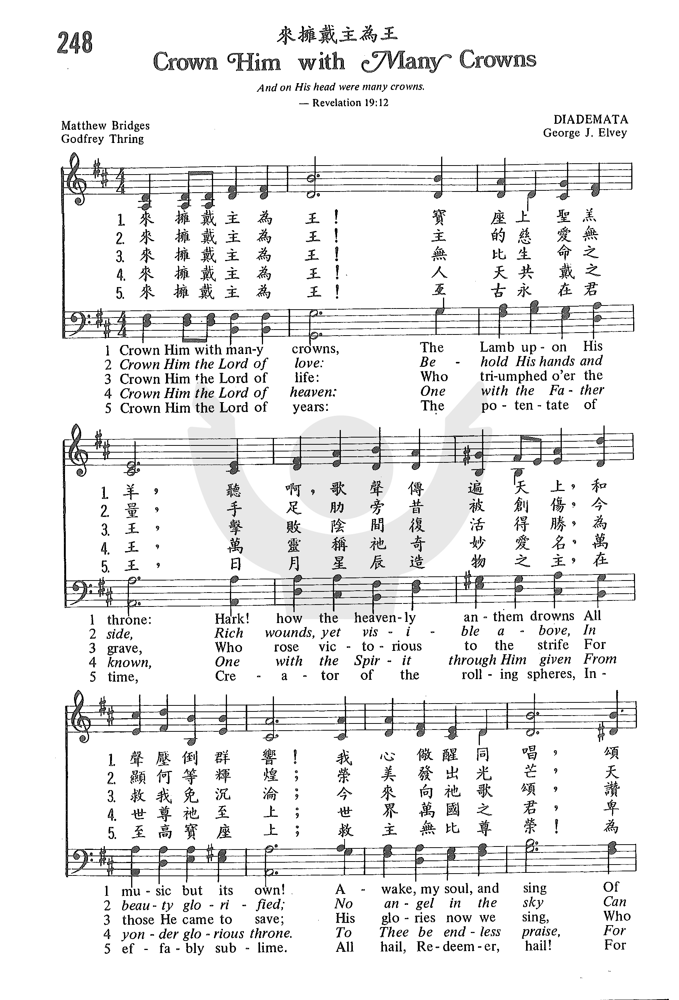
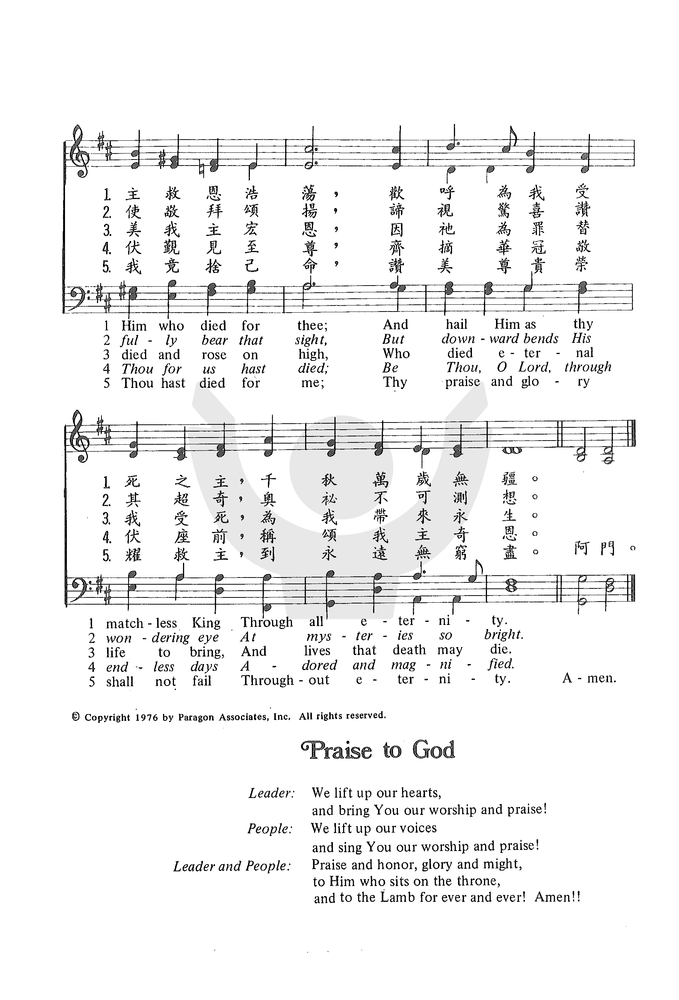

0223 Crown Him with Many Crowns _Matthew
Bridges 来拥戴主为王 DIADEMATA
▲
| 簡介
Crown Him
with Many Crowns |
| This text is so familiar that it is
easy to miss all its paradox, mystery, suffering, and beauty; it rewards
careful reading and meditation outside corporate worship. The tune’s
composer, chapel organist at Windsor Castle, had much experience in
creating a royal sound. |
|
|
【擁戴我主為王】
詩集：生命聖詩，9 |
|
1 Crown him with many crowns,
the Lamb upon his throne.
Hark! how the heavenly anthem drowns
all music but its own.
Awake, my soul, and sing
of him who died for thee,
and hail him as thy matchless king
through all eternity.
2 Crown him the Lord of life,
who triumphed o'er the grave,
and rose victorious in the strife
for those he came to save;
his glories now we sing
who died and rose on high,
who died eternal life to bring,
and lives that death may die.
3 Crown him the Lord of love;
behold his hands and side,
rich wounds, yet visible above,
in beauty glorified;
no angels in the sky
can fully bear that sight,
but downward bends their burning eye
at mysteries so bright.
4 Crown him the Lord of years,
the potentate of time,
creator of the rolling spheres,
ineffably sublime.
All hail, Redeemer, hail!
for thou hast died for me;
thy praise shall never, never fail
throughout eternity.
Worship and Rejoice, 2003
|
- 擁戴我主為王，聖羔在寶座上，
請聽天上歌聲悠揚，樂聲壓倒群響，
我靈速醒同唱，頌主為我受傷，
歡呼祂為至大君王，千秋萬歲無疆。
- 擁戴我主為王，祂是仁愛之王，
祂手祂足肋旁受傷，今仍顯明天上，
何等奇妙奧祕，發出榮美光芒，
天使驚奇不敢仰視，一同俯首頌揚。
- 擁戴我主為王，祂是和平之王，
普天之下戰爭停息，和平統治四方，
遍地禱頌聲揚，國權萬世永長，
美花環繞曾受傷足，朵朵歷久芬芳。
- 擁戴我主為王，祂是萬世之王，
宇宙天體乃主創造，榮美無可比量，
齊來頌讚救主！你曾為我受死，
讚美之聲永不止息，永遠感恩不已。
|
|
http://sooopu.com/html/301/301157.html


https://www.iwtfly.com/di-180-shou-wo-de-deng-xu-yao-you.html
|
|
|
|
 Crown
Him with Many Crowns 來擁戴主為王
https://youtu.be/BSzuoqTVZ8I
Crown
Him with Many Crowns 來擁戴主為王
https://youtu.be/BSzuoqTVZ8I
-
教會聖詩 248
來擁戴主為王 Crown Him with Many Crowns https://youtu.be/OPdJMoYQ73w
-
-
Crown Him with Many Crowns · The Tabernacle Choir at Temple Square
-
Crown Him with Many Crowns · George J. Elvey
|
Short Name: |
Matthew Bridges |
|
Full Name: |
Bridges, Matthew, 1800-1894 |
|
Birth Year: |
1800 |
|
Death Year: |
1894 |
Matthew BridgesHymns
of the Heart (1847) and The Passion of Jesus (1852).
He lived in Quebec, Canada, for some time but returned to England before his
death.
Bert Polman
===========
Matthew Bridges was born at Malden, Essex, on July 14, 1800. He began his
literary career with the publication of a poem, "Jerusalem Regained," in
1825; followed by a book entitled The Roman Empire under
Constantine the Great, in 1828, its purpose being to examine "the real
origin of certain papal superstitions." As a result of the influence of John
Henry Newman and the Oxford Movement, Bridges became a Roman Catholic in
1848, and spent the latter part of his life in Canada. He died in Quebec on
October 6, 1894.
--Annotations of the Hymnal, Charles Hutchins, M.A., 1872
===========================
Bridges, Matthew,
youngest son of John Bridges, Wellington House, Surrey, and brother of the
Rev. Charles Bridges, author of An Exposition of the cxix.
Psalm, born at The Friars, Maiden, Essex, July 14,1800, and educated in
the Church of England, but subsequently conformed to the Church of Rome. His
works include, Babbicombe, or Visions of Memory, with other
Poems, 1842; Hymns of the Heart, 1848 (enlarged
in 1852); and The Passion of Jesus, 1852, besides some
prose productions. From the last two works his hymns found in common use are
taken, the greater number being from Hymns of the Heart.
Besides the hymns in use in Great Britain, as, “Behold the Lamb," "My God,
accept my heart this day," and others, the following, all of which were
published in 1848, are found in several American collections, to which they
were introduced mainly through the Rev. H. W. Beecher's Collection,
1855:—
Notes
Crown Him with
many crown. [Christ the King.] Four hymns are found in
common use, each of which opens with this stanza. They are:—
1. By Matthew Bridges, which appeared in his Hymns of
the Heart, 2nd ed., 1851, p. 58, in 6 stanzas of 8 lines, and
headed, "In capito ejus diademata multa. Apoc. xix. 12." This was
repeated in his Passion of Jesus, 1852, p. 62,
where the title runs, "Third Sorrowful Mystery, Song of the Seraphs.
Apoc. xix. 12." In treatment and expression it has a more than slight
resemblance to Kelly's "Look, ye saints, the sight is glorious" (q. v.).
With alterations, and sometimes abbreviations, it appeared for
congregational use in the People's Hymnal, 1867; Hymns
Ancient & Modern, 1868 and 1875; Sarum, 1868; Hymnary,
1872; Hymnal Companion, and others.
2. In the Appendix to the Society for
Promoting Christian KnowledgePsalms and Hymns, 1869, there aro
10 stanzas of 4 lines, of which 8 stanzas are from M. Bridges, and 2,
i.e. stanzas vii. and viii., "Crown Him the Lord of Might," &c, are by
another hand.
3. In S. P. C. K. Church Hymns, 1871, we have a
cento based upon Bridges's text, and thus composed, i. Bridges; ii.-iii.
Bridges altd.; iv. Rev. G. Thring; v. Bridges altd.; vi. from S. P. C.
K. as above; vii. 11. 1-4, Rev. G. Thring; lines 5-8, Bridges.
4. The hymn opening with the same stanza in Thring's Collection,
1882, is practically new, the first stanza and line1 of the 5th being
all that have been adopted from M. Bridges. Its original form in which
it first appeared was, "Crown Him with crowns of gold." (In the American
College Hymnal, N.Y., 1876.) This was in Mr. Thring's Hymns
and Sacred Lyrics, 1874, p. 75, that portion of it contained in the Church
Hymns, as noted above, having previously appeared in that
collection. In 1880, on being transferred to Mr. Thring's Collection,
M. Bridges's opening stanza was substituted for the original in order to
retain those fine lines:—
"Hark! how the
heavenly anthem drowns
All music but its own."
A portion of the
original hymn is sometimes given in American hymnals as, "Awake, my
soul, and sing." It begins with line 5 of stanzas i., and is No. 272 in
the Baptist Hymn and Tune Book Philadelphia,
1871
--John Julian, Dictionary
of Hymnology (1907)
Read Less
One of the most effective and simple costume changes is to put on a hat. When
you walk off stage and return wearing a top hat, you are suddenly a different
person. A “man of many hats” is someone who can be a different person in
different contexts or crowds. This hymn declares that we are to crown our Lord
with many crowns, but this does not mean that Jesus is a “man of many hats.”
Christ was not simply a prophet, He was not simply the carpenter’s son, and He
was not simply human, nor simply divine. Rather, this call to “crown him with
many crowns” is a simple and yet profound declaration that Christ is many
things, and everything. He is Lord of all, to be crowned for many things that
all add up to Him being Savior of the world. Each crown represents a different
aspect of who Christ is – Lord of life, Lord of love, Lord of years, Lord of
heaven, the Lamb upon the throne. Christ is King, Servant, Lamb, Shepherd, and
we celebrate this all-encompassing, paradoxical nature of our Savior by crowning
Him the Lord of all.
Text:
The original text was written by Matthew Bridges, and later revised in his
second edition of Hymns of the Heart, published in 1851.
Another text was written by Godfrey Thring, who wrote, “The greater part of this
hymn was originally written at the request of the Reverend H. W. Hutton, to
supply the place of some of the stanzas in Matthew Bridges’ well-known hymn, of
which he and others did not approve; it was afterwards thought better to rewrite
the whole, so that the two hymns might be kept entirely distinct” (Lutheran
Hymnal Handbook). Thring’s original second verse is now commonly paired with
Bridges’ original stanzas.
There are a great number of variations of this hymn text. Almost no two hymnals
include the exact same arrangement of phrases or number/order of verses. It’s
difficult even to say what the most common verses are, so simply be aware that
texts differ and make sure to double check the commonality if you’re using
copies of the hymn from multiple sources.
Tune:
DIADEMATA was composed for this text by George J. Elvey in 1868. Albert Bailey
writes, “This is another of those hymns that can be sung at different paces, but
which don’t lend themselves to changes in volume. Rather, Crown Him…builds with
pomp, the second half of each verse making you want to stand to sing” (The
Gospel in Hymns, 76). Accompany this hymn with firm organ, piano, and
trumpets, or with a driving drum beat and acoustic/electric guitar.
When/Why/How:
This hymn is perhaps most popular at Easter, but it would be fitting during any
time of festivity or celebration of Christ’s rule, whether that be Easter,
Ascension Day, or Christ the King Sunday. The hymn is a particularly fitting
opening hymn of praise or processional. This hymn could be paired with “All Hail
King Jesus,” “All Glory Laud and Honor,” or “All Hail the Power of Jesus Name,”
just to name a few.
Tune Information
|
Title: |
DIADEMATA (Elvey) |
|
Composer: |
George J. Elvey (1868) |
|
Meter: |
6.6.8.6 |
|
Incipit: |
11133 66514 32235 |
|
Key: |
E♭
Major |
|
Copyright: |
Public Domain |
|
Short Name: |
George J. Elvey |
|
Full Name: |
Elvey, George J., 1816-1893 |
|
Birth Year: |
1816 |
|
Death Year: |
1893 |
George Job Elvey (b.
Canterbury, England, 1816; d. Windlesham, Surrey, England, 1893)

As a young boy, Elvey was
a chorister in Canterbury Cathedral. Living and studying with his brother
Stephen, he was educated at Oxford and at the Royal Academy of Music. At age
nineteen Elvey became organist and master of the boys' choir at St. George
Chapel, Windsor, where he remained until his retirement in 1882. He was
frequently called upon to provide music for royal ceremonies such as
Princess Louise's wedding in 1871 (after which he was knighted). Elvey also
composed hymn tunes, anthems, oratorios, and service music.
Bert Polman
Notes
Composed for Bridges's
text by George J. Elvey (PHH
48), DIADEMATA was first published in the 1868 Appendix
to Hymns Ancient and Modern. Since that publication, the tune has
retained its association with this text. The name DIADEMATA is derived
from the Greek word for "crowns."
The tune is lively and buoyant (though the harmony lacks life,
especially the inner voices). Sing a strong unison on stanza 3 if using
the Hal H. Hopson (PHH
219) descant. A number of good choral and brass arrangements, useful
for festive occasions, are available.
--Psalter Hymnal
Handbook, 1988
Tune Information
|
Title: |
DIADEMATA (Barnby) |
|
Composer: |
Joseph Barnby (1872) |
|
Meter: |
6.8.6.8 D |
|
Incipit: |
17677 65171 25 |
|
Key: |
B♭
Major |
|
Copyright: |
Public Domain |
|
Short Name: |
Joseph Barnby |
|
Full Name: |
Barnby, Joseph, 1838-1896 |
|
Birth Year: |
1838 |
|
Death Year: |
1896 |
Joseph Barnby (b.
York, England, 1838; d. London, England, 1896)

An accomplished and
popular choral director in England, Barby showed his musical genius early:
he was an organist and choirmaster at the age of twelve. He became organist
at St. Andrews, Wells Street, London, where he developed an outstanding
choral program (at times nicknamed "the Sunday Opera"). Barnby introduced
annual performances of J. S. Bach's St. John Passion in
St. Anne's, Soho, and directed the first performance in an English church of
the St. Matthew Passion. He was also active in regional music festivals,
conducted the Royal Choral Society, and composed and edited music (mainly
for Novello and Company). In 1892 he was knighted by Queen Victoria. His
compositions include many anthems and service music for the Anglican
liturgy, as well as 246 hymn tunes (published posthumously in 1897). He
edited four hymnals, including The Hymnary (1872)
and The Congregational Sunday School Hymnal (1891),
and coedited The Cathedral Psalter (1873).
Bert Polman
Notes
Composed for Bridges's
text by George J. Elvey (PHH
48), DIADEMATA was first published in the 1868 Appendix
to Hymns Ancient and Modern. Since that publication, the tune has
retained its association with this text. The name DIADEMATA is derived
from the Greek word for "crowns."
The tune is lively and buoyant (though the harmony lacks life,
especially the inner voices). Sing a strong unison on stanza 3 if using
the Hal H. Hopson (PHH
219) descant. A number of good choral and brass arrangements, useful
for festive occasions, are available.
--Psalter Hymnal
Handbook, 1988
Jan 09-10, 2021
李耀全牧師
親愛的列宣家弟兄姊妹：
我們告別了2020年，迎來了2021年。因著君王基督所賜予的應許，盼望我們今年能充滿活力，健康和喜樂。本年度，我們將採用生命聖詩中的“擁戴我主為王”詩歌作為教會整年的主題。
本詩歌詞
“擁戴我主為王”是什麼意思？本詩由Matthew Bridges於1851年所寫。在生命聖詩中的四節歌詞如下：
擁戴我主為王，聖羔在寶座上,
請聽天上歌聲悠揚，樂聲壓倒群響，
我靈速醒同唱，頌主為我受傷，
歡呼祂為至大君王，千秋萬歲無疆。
擁戴我主為王，祂是仁愛之王，
祂手祂足肋旁受傷，今仍顯明天上，
何等奇妙奧祕，發出榮美光芒，
天使驚奇不敢仰視，一同俯首頌揚。
擁戴我主為王, 祂是和平之王，
普天之下戰爭停息，和平統治四方，
遍地禱頌聲揚，國權萬世永長，
美花環繞曾受傷足，朵朵歷久芬芳。
擁戴我主為王，祂是萬世之王，
宇宙天體乃主創造，榮美無可比量，
齊來頌讚救主！你曾為我受死，
讚美之聲永不止息，永遠感恩不已。
本詩背景
“擁戴我主為王” 詩歌由Matthew
Bridges所寫，起先原有六節。他於1800年在英國埃塞克斯郡的馬爾登出生。儘管他在英國聖公會中成長，但他於1848年，因著參與由約翰·亨利·紐曼領導的牛津運動而歸依天主教。牛津運動是牛津大學的英國聖公會神職人員在1833年至1845年之間，致力於透過復興天主教教義與實踐來更新英格蘭教會所達成。Matthew
Bridges在1851年於英國牛津運動時期後撰寫這詩歌。其後，因著原先的詩歌已在聖公會中甚為流行，聖公會牧師Godfrey
Thring再多加了六節歌詞，以強調有別於天主教神學的改革宗神學觀念。今天，我們的基督教詩集保留了四節的詩詞（1、4、5和6節），省略了原先天主教神學特色的第2和3節。對於我們在列宣家的肢體而言，這段歷史提醒了我們要珍惜宣道會信仰的特色，即基督的四重福音：基督是救主、使人成聖的主、醫治的主、和再來之王。
珀金斯神學院的聖樂教授Hawn博士說：“如果要選取一首適合基督君王主日的詩歌(基督將臨期前的最後一個主日，即開始教會年曆的新年度），這首聖詩實在是最合適不過了。我們注意到原先的六節中提到了六個冠冕：“擁戴祂為王 (君王加冕)…“聖羔羊在寶座上”(第1節)；(生命聖詩省略了其中的第2和3節)；
“擁戴仁愛之主為王”(第4節)；“擁戴和平之主為王”(第5節)；和“擁戴萬世之主為王”(第6節)。在邁進2021年時，讓我們謹記，坐在寶座上的羔羊基督是–
愛、和平與歲月的主宰。
此外，據Hawn博士所言，喬治·喬布·埃爾維爵士(Sir George Job
Elvey，1816-1893)於1868年為這首詩歌創作曲譜時，他是按照“DIADEMATA”(即:“皇冠”之意)，在“古今讚美詩集”的附錄中出版。聖詩學者Watson
觀察到，這首詩歌的曲調，為歌詞營造了冠冕堂皇的宏偉氣派，既具備愉快的進行曲式，又絲毫沒有呆板或尖銳刺耳的感覺。在2021年裡，當我們唱頌這首詩歌時，總能帶動我們聯繫到基督君王的威嚴雄偉。
本詩信息
本主題的圖像之一出自於啟示錄22章的第1節：
“天使又指示我一道明亮如水晶的生命水的河流，從神和羊羔的寶座那裡流出來，經過城裡的街道。河的兩邊有生命樹，結十二次果子，每月都結果子；樹葉可以醫治列國。”
生命之水從神和羔羊的寶座中流出，流入我們的城市，為各國帶來成果和康復！這豈不是在2021年中我們所需要的嗎？
詩歌中的另一幅圖像也出自啟示錄19:12，“祂的眼睛好像火燄，頭上戴著許多皇冠，祂身上寫著一個名字，這名字除了他自己沒有人認識。”(新譯本)
在聖誕節將臨期之中，我們已看到主耶穌第一次來到世上是多麼的降卑(路2:7)。並且藉著對腓立比書的研究，我們更明白耶穌來世是為著受死，在十字架上犧牲自己(腓2:8)。
然而，主耶穌的第二次降臨將會是萬王之王和萬主之主，祂要帶著如烈焰的目光來臨。祂看透一切，並將帶來審判。耶穌頭上的王冠表明祂是宇宙毋容置疑的絕對統治者。在祂眾多的名稱中，耶穌具有一個只有祂自己才知道的名字，這象徵著神的兒子在再來時將會帶著任何人都不知道的名字再臨，代表著我們所無法理解的位格與作為(啟19:11-21)。
確實地，在我們面對2020年所見的疫情大流行和其他因素所造成的混亂中，讓我們今年從世上君王的失敗中汲取教訓，仰望彌賽亞基督、君王，在充滿喜樂和盼望中等待再來之君，基督的再臨。
以許多冠冕給祂加冕，擁戴我主為王！
是的，讓我們同來擁戴基督為主為王！
主僕,
李耀全牧師
https://online.rcac.ca/pastoral-letters/7986
简介（一）
（来源：《岁首到年终》）
Matthew Bridges, 1800-1894 and Godfrey Thring, 1823-1903
我又观看，见有一片白云，云上坐着一位好象人子，头上戴着金冠冕。(启14:14)
世人的王似乎有权有势，有福有乐，其实全是虚幻，和全是捕风。所罗门王在传道书2:1-11证明了这一切。耶稣在受难周第一天，乘荣进入耶路撒冷，应验旧约预言所说「你的王骑着驴驹来了」。从表面看来，这似乎是破裂的，平凡的，愚蠢的和软弱的。其实却是有权有势，又能给人真福真乐。请看众人所举的棕树叶，岂不是最破裂的叶子吗？众人铺在路上的旧衣服，岂不是最平凡的东西吗？祂所乘坐的驴驹，岂不是代表着软弱和愚昧么？世界上那里有一个大君王，骑着驴子去即位呢？况且不久祂被钉死，这岂不真是破裂平凡和软弱吗？
当英国女王以利沙伯在六十寿辰庆祝典礼中，肃然除下冠冕站立起来，与众人一同颂赞基督。拿破仑在加冕为王的仪式中，恭敬跪下，在主基督的十字架前仰望我主。此举清楚表明万王之王耶稣基督，到底超乎世上的君王元首更有权能。
这首「来拥戴主为王」的圣诗是由两位杰出的安立甘牧师合作完成的。他们两位都热切地要将心中的感动写出来，表达对万王之王的尊崇歌颂。Matthew Bridges
的版本系1851年完成，其有六节歌词。经过廿三年后，Godfrey Thring 加上自作的六节，共十二节刊印于其「Hymns and Sacred
Lyrics」诗集内。现在所用的圣诗，其中第一、二和四节系Bridges写的，第三节乃Thring 的作品。
本诗的曲调作者为英国 Windsor 圣乔治教堂著名风琴师 George J. Elvey (1816-1893)。
1 来拥戴主为王！宝座上圣羔羊，听啊，歌声传遍天上，和声压倒群向！
我心儆醒同唱，颂主救恩浩荡，欢呼为我受死之主，千秋万岁无疆。
2 来拥戴主为王！主的慈爱无量，手足肋旁昔被创伤，今显何等辉煌；
荣美发出光芒，天使敬拜颂扬，谛视惊喜赞其超奇，奥秘不可测想。
3 来拥戴主为王！无比生命之王，击败阴间复活得胜，为救我免沉沦；
今来向祂歌颂，赞美我主宏恩，因祂为罪替我受死，为我带来永生。
＊敬拜是一种生活的模型，是我们全人对神的反应。── 马得胜
简介（二） （摘自：《赞美诗（新编）史话》）
经文：“他头上戴着许多冠冕。。。”（启19：12）。
《拥戴歌》是一首雄壮、典雅的加冕赞歌，作者是英国圣公会牧师布里奇斯（M.Brides,1800-1894）。他在牛津大学毕业后即任牧职，兼任大学讲师，以诗文和历史论著闻名。1825年即出版他的长诗《耶路撒冷光复记》，1828年出版《君士坦丁大帝治下的罗马帝国》，1848年受牛津大学运动及纽曼的，转宗天主教；后半生移居加拿大魁北克城，从事著述。这首《拥戴歌》原在他的一本圣诗中发表，以后许多赞美诗都先后选入，但除第一节外，其它各节都有所删节或更改增补。现先按原诗各节介绍于下：
这首诗是作者根据启示录第19章第12节“他头上戴着许多冠冕”，而用诗人的想象，联系到救主君王各方面的身份写出来的。每一节首句“快来拥戴为王”如直译应作“加冕于主头上”。原诗共六节，第一节以冠冕加于坐在宝座上的羔羊（启22：1）。“好乐传遍诸天，和声压倒群响”，乃是本着启示录第5章第12节所描写的天上颂赞“曾被杀的羔羊是配得权柄、丰富、智慧、能力、尊贵、荣耀、颂赞的”。
说起来也有点奇怪，原诗第二节是经文根据最多的一节，但除英国的《古今圣诗集》采用外，其它赞美诗集中，多略不用。兹将原诗第二节译于下：
加冕在主头上，道成人身之主，
不嫌童女腹中诞生，伯利�瓻勘o婴；
耶西之根结果，膀臂施展大能，
胜利红旗照耀万方，丰富慈爱永�琚C
按童女怀孕生子，旧约早有预言。他是先祖雅各弥留之际所作颂歌中的“细罗”（“赐平安者”，戗9：10）；“从耶西的本必发一条，从他根生的枝子必结果实”（赛11：1）；又如那位牧人君王“必像大能者临到，他的膀臂必为他牚权”（赛40：10-11）。这些旧约经文，后期犹太人都认为是指着将来的弥赛亚，而基督教则认为是应验在我主耶稣基督身上，这位生在伯利�瓻高盡o婴是神的化身、弥赛亚的临格，同时又是一位真正原人。
原诗第三节即《新编》第39首的第二节：“加冕于主头上，圣洁至尊神子”，歌颂我主耶稣神性人性兼备，一方面他与太初之神同具“先在”之性（参约1：1，8：58；西1：15；腓2：6）；另一方面，也成为人，“尘世千万忧伤，一切经他亲尝”，他凡事受过试探，与我们一样（参来4：15；腓2：7-8；赛53：4；路9：22）。
原诗第四节歌颂主是仁爱之君：
加冕于主头上，他是仁爱之君；
双手胁旁所受创伤，已成无比崇尊，
天上侍卫天使，亦觉奇妙莫名，
但愿俯身向下察看，赎罪奥妙功成。
神就是爱，耶稣是仁爱之君（约3：16，15：13）。对于神爱的完成，“天使也愿意详细察看”（彼前1：12）。有人认为只有《奇妙十架歌》（《新编第98首）的第三节，堪与此节并美：
试问众生曾否见过，忧愁慈爱和血并流?
愁爱可曾如此相接，荆棘可曾化作冕旒？
原诗第五节；加冕于和平之君（参赛9：6-7，52：7，26：3；诗72：7-8；启1：8，22：13）。
加冕于主头上，他是和平之君。
王杖挥动地极沾恩，大地止息战争。
赞美祈祷之声，人间四处可闻。
好花芬芳绕主伤痕，天国永无穷尽。
原诗第六节：加冕于万世之君。“他在万有之先，万有也靠他而立”（西1：16-17）。时间还未开始，他就是创主宰，有了时间之后，他却是永无穷尽，配受万世万民的赞美称颂：
加冕于主头上，他是万世之君！
宇宙万物皆主所造，时间在主手中；
崇高难以言喻，赞美万世相同，
救赎君王为我受死，颂主永无穷尽。
布里奇斯原以为是以上六顶冠冕可以概括我主尊荣，却没想到与他同时的人和在他以后的人却源源不断地为此作了补充。1880年英国圣公会思林牧师（G.Thring,1823-1903）在编辑赞美诗时首先提出：犹太教都是以“七”为完全、圣洁之数，至少应再增加第七节颂赞主为生命之王。因为生命乃约翰福音所强调的基督恩赐之一（约1：4，6：63，11：25）。
所以，《新编》第39首实际是结合两位作者所写的圣诗，取布里奇斯原诗的第三节，作为一、二、四节，加上思林的“独一生命之王”为第三节。
曲调乃英国作曲家埃尔维（G.J.Elvey,1816-1893）特为这首诗所谱的。调名《DIADEMATA》，即启示录第19章第12节希腊文用以指“冠冕”这个字。《拥戴歌》最初见于1868年所出版的《古今圣诗集》，此后每一版都登载了这首诗。
埃尔维是一位管风琴家、作曲家，从小就在坎特伯雷教堂唱诗班歌唱，后到英国皇家学院学习音乐，19岁就任圣乔治教堂的风琴师，直到他退休时，共47年。他于1840年得音乐博士学位，1871年被英王封为骑士。他写过许多教堂音乐，但赞美诗写的不多。他的宗教音乐作品，有很深刻的宗教感情。逝世后人们将他葬在他生前工作过的教堂院中。
https://www.xueshengshi.com/?p=1281
"Crown Him with Many Crowns"
Matthew Bridges and Godfrey Thring
The United Methodist Hymnal, No. 327
Crown him with many crowns,
the Lamb upon his throne.
Hark! how the heavenly anthem drowns
all music but its own.
Awake my soul, and sing
of him who died for thee,
and hail him as thy matchless King
through all eternity.
Matthew Bridges (1800-1894), like several others of his era, started in the
Anglican Church and then, following the lead of John Henry Newman
(1801-1890), became a Roman Catholic.
This was the time of the Oxford Movement in England. The Oxford Movement
centered on, according to hymnologist Albert Bailey, “claiming for their
Anglican Church lineal descent from the original Apostolic Church.” In
pursuit of this, adherents to the movement studied the ancient history of
the church, its doctrine, and especially its liturgy. In doing so they
discovered a wealth of Greek and Latin hymnody from the earliest centuries
of the Christian church.
Dated from 1833 with a sermon by John Keble, the movement gained steam under
John Henry Newman. The earliest years of the movement were given to
translations of Greek and Latin hymns by such important figures as Edward
Caswall (1814-1878) and John Mason Neale (1818-1866). Wanting to share in
the rich hymnic tradition of the Protestant Church, former Anglican poets
now converted to Roman Catholicism such as Frederick Faber (1814-1863) and
Matthew Bridges began writing original hymns.
Bridges was born in Essex, England and left the Church of England to become
Roman Catholic in 1848, just three years after John Henry Newman had taken
that course. He lived his latter years in Quebec, Canada, returning to
England before his death.
He published two small volumes of hymns, Hymns of the Heart (1847)
and The Passion of Jesus (1852). “Crown him with
many crowns” was published in the second edition of Hymns of
the Heart in 1851 in six, eight-line stanzas. According to
Methodist hymnologist Fred Gaely’s research, the stanzas appear under the
title “In capite ejus, diamemata multa, Apoc. xix. 12” (“His [the rider of
the white horse] eyes are like a flame of fire, and on his head are many
diadems; and he has a name inscribed that no one knows but himself.”)
Once the hymn appeared in the Appendix to the
first edition of Hymns Ancient and Modern (1868),
the monumental hymnal of the Oxford Movement, its future was assured.
If there was ever a hymn that suited Christ the King Sunday (last Sunday
before Advent begins a new Christian Year), it is this hymn. The original
six stanzas mention six crowns: “Crown him . . . the Lamb upon the throne”
(stanza one) drawn from Revelation 22:1; “Crown him the Virgin’s Son”
(original stanza two); “Crown him the Son of God” (original stanza three);
“Crown him the Lord of Love” (original stanza four); “Crown him the Lord of
Peace” (original stanza five); and “Crown him the Lord of Years” (original
stanza six).
Hymnology scholar J. R. Watson, notes that, “During the 1870s, objections
were made to Bridge’s words, perhaps because of the complex references to
the Blessed Virgin Mary.” Godfrey Thring (1823-1903), an Anglican priest,
composed a new version and published it in his Hymns and Sacred
Lyrics (1874). The United Methodist Hymnal, like
many others, combines a stanza of Thring’s text (stanza two) with three from
Bridges’ original.
A good or even a great text does not survive without a stirring tune.
DIADEMATA (meaning “crowns”) is the tune that was written by Sir George Job
Elvey (1816-1893) for this hymn when it was published in the Appendix
of Hymns Ancient and Modern in 1868. Watson agrees with most
when he observes, “[DIADEMATA] makes a magnificent setting for the text,
march-like and joyful without ever becoming mechanical or strident.” The
popular tune appears four times, each to a different text, in The
UM Hymnal.
Dr. Hawn is professor of sacred music at Perkins School of Theology.
https://www.umcdiscipleship.org/resources/history-of-hymns-crown-him-with-many-crowns
INTRO.:
A hymn which identifies Christ as the King of kings and Lord of Lords with many
crowns upon His head is "Crown Him With Many Crowns." The original text was
written by Matthew Bridges who was born at Malden in Essex, England, on July 14,
1800. Educated to be a minister in the Church of England, his main interests
were literature and history, and he published a book entitled The
Roman Empire Under Constantine the Great, which contained many passages
against the Roman Catholic Church. However, in 1848, under the influence
of John Henry Newman and others in the Oxford Movement, he went into the
Catholic Church.
As a writer, Bridges’s other published works include political pieces and
several volume of history. However, he is best known today for his religious
poetry, from which several hymns have found their way into common usage. Most of
them were introduced into the United States by Henry Ward Beecher. His "Crown
Him With Many Crowns" first appeared in 1851 in the second edition of Bridges’s Hymns
of the Heart and consisted of six stanzas. The tune (Diademata)
was composed for this hymn by George Job Elvey (1816-1893). He was music
director at St. George’s Chapel in Windsor, England, where the British royal
family often attended. It first appeared with Bridges’s text in the 1868
Appendix to Hymns
Ancient and Modern.
Then, in 1874, 23 years after the hymn first appeared, six additional stanzas
were written by Anglican minister Godfrey Thring (1823-1903). These first
appeared in his 1874 Hymns
and Sacred Lyrics. Most books today use a composite of stanzas drawn
from both Bridges and Thring. Bridges spent some of his latter years in Canada,
but returned to England where he died at Sidmouth in Devonshire on Oct. 6, 1894.
Among hymnbooks published by members of the Lord’s church during the twentieth
century for use in churches of Christ, the song was found in the 1937 Great
Songs of the Church No. 2 edited by E. L. Jorgenson; and the
1963 Christian
Hymnal edited by J. Nelson Slater. Among books still published
today, it may be found in the 1971 Songs
of the Church, the 1990 Songs
of the Church 21st C. Ed., and the 1994 Songs
of Faith and Praise, all edited by Alton H. Howard; the 1986 Great
Songs Revised edited by Forrest M. McCann; and the 1992 Praise
for the Lord edited by John P. Wiegand.
This hymn presents several possible reasons for the crowns on Jesus’ head.
I. The first crown represents kingship in general and is said to be on the Lamb
"Crown Him with many crowns, the Lamb upon His throne;
Hark! how the heavenly anthem drowns All music but its own!
Awake, my soul, and sing Of Him who died for thee,
And hail Him as thy matchless King Through all eternity."
A. Jesus Christ is the Lamb of God: Jn. 1.29, 1 Pet. 1.18-21
B. And this Lamb of God is now upon His throne: Acts 2.29-32, Heb. 8.1
C. As the victorious Lamb upon His throne, He is worthy of our praise: Rev.
5.6-7, 11-12
II. The second crown belongs to Christ as both Son of God and Son of Man
"Crown Him the Son of God Before the world began,
And ye, who tread where He hath trod, Crown Him the Son of man;
Who every grief hath known That wrings the human breast,
And takes and bears them for His own, That all in Him may rest."
A. Jesus Christ is certainly the divine Son of God: Matt. 16.16, John 20.30-31
B. However, Jesus is also the Son of Man in that He became flesh and lived as a
man: Jn. 1.14, Phil. 2.5-8
C. And one stated purpose of His becoming a man is that He might be able to aid
those who are tempted: Heb. 2.14-18
III. The third crown is that of love, as demonstrated in His death for our sins
"Crown Him the Lord of love! Behold His hands and side,
Rich wounds, yet visible above, In beauty glorified.
All hail, Redeemer, hail! For Thou hast died for me:
Thy praise shall never, never fail Throughout eternity."
A. Certainly, Jesus is the supreme embodiment and expression of God’s love for
sinful mankind: Jn. 3.16
B. And that love was shown by His willingness to die for our sins: Rom. 5.8
C. Thus, because of this great love, we can have salvation: Eph. 1.3-7, 2.4-10
IV. The fourth crown is that of life, as manifested by His resurrection from the
dead
"Crown Him the Lord of life, Who triumphed o’er the grave,
And rose victorious in the strife For those He came to save;
His glories now we sing Who died, and rose on high,
Who died, eternal life to bring, And lives that death may die."
A. The Bible records the resurrection of Christ from the dead as a historical
fact: Lk. 24.1-10
B. Thus, the central message of gospel preaching in the first century was that
Jesus Christ arose from the dead: Acts 2.22-24, Rom. 1.3-4, 1 Cor. 15.1-4
C. And because Jesus Christ thus showed Himself to be Lord of life, He can give
us life: Jn. 1.4, 10.10
V. The fifth crown belongs to Jesus as the Lord of peace
"Crown Him the Lord of Peace, Whose power a scepter sways
From pole to pole, that wars may cease, Absorbed in prayer and praise;
His reign shall know no end, And round His blessed feet
Fair flowers of paradise extend Their fragrance ever sweet."
A. It had been prophesied that the Messiah would be the Prince of Peace: Isa.
9.6-7
B. Indeed, Jesus came to bring peace: Lk. 2.10-14
C. While worldly peace between warring nations is something to be desired, the
peace of Christ is more than that because it makes it possible for sinful
mankind to be a peace with God: Eph. 2.13-14
VI. The sixth crown is His as the Lord of Heaven
"Crown Him the Lord of Heaven, One with the Father known,
And the blest Spirit, through Him given, From yonder glorious throne!
No angel in the sky Can fully bear that sight,
But downward bends his burning eye At mysteries so bright."
A. Jesus Christ ascended back to heaven: Dan. 7.13-14, Acts 1.9-11
B. Having ascended to God, He now has all rule and authority: Eph. 1.19-21
C. And as the Lord of Heaven, He has opened the way to eternal life with God to
all mankind who would obey God’s will: Rev. 22.1-5
CONCL.:
Another stanza sometimes used in books today is:
"Crown Him the Lord of Years, The Potentate of time,
Creator of the rolling spheres, Ineffably sublime.
Crown Him with many crowns, As thrones before Him fall;
Crown Him, ye kings, with many crowns, For He is King of all."
Some brethren have objected to this song, perhaps assuming that it is talking
about crowning Christ when He comes again. One might mistakenly think that, but
this is not what the song says. It pictures the crowning of Christ in heaven
following His resurrection and ascension, and thus refers to the fact that He
has been crowned and is therefore King upon His throne today. However, it might
also be said that we continue to crown Him in the sense that we make Him the
King of our lives by yielding our hearts to Him and also by our praises to Him
both here and in eternity. Jesus Christ was crowned as Savior and King following
His death and resurrection, upon His ascension when He sat down on His throne at
the right hand of the Father on high. Today, He is crowned by each individual as
we make Him the King of our hearts and Lord of our lives in obedience to His
will. And in heaven, the redeemed of all ages, along with the angelic hosts,
will crown Jesus forever and ever as the Son of God with their eternal praises
to His name. Therefore, it is fitting that, with thoughts of all that Jesus has
done for us, we sing, "Crown Him With Many Crowns."
https://hymnstudiesblog.wordpress.com/2008/05/08/quotcrown-him-with-many-crownsquot/